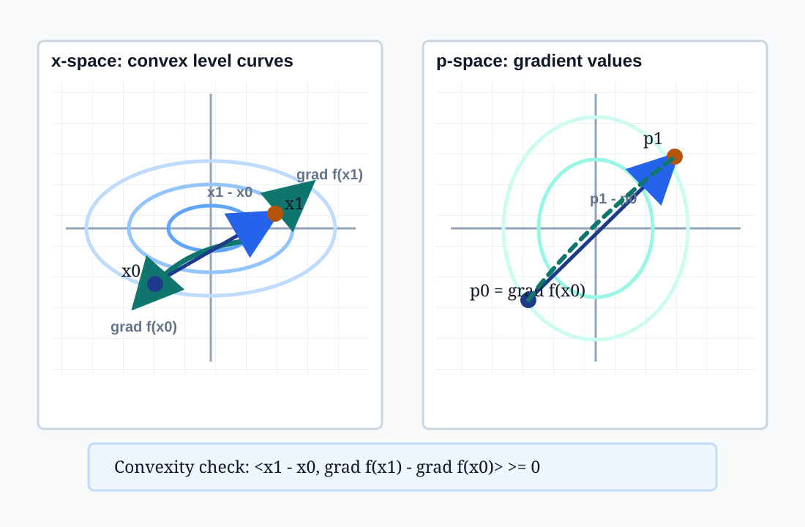
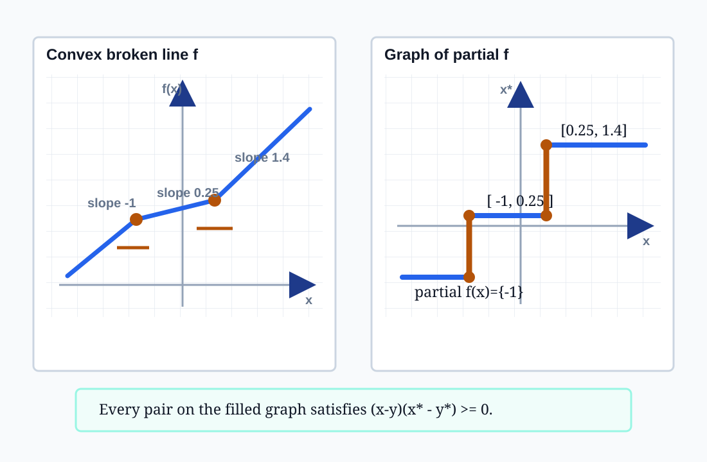
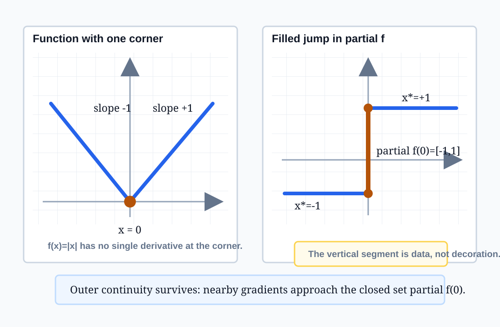

24.1one-sided slopes
24.4closed graph
24.7bounded slopes
24.8-9cyclic maps
Subgradient maps are derivative-like because convexity forces their graphs to be ordered, closed, locally bounded, and cyclically consistent.
Teach continuity and monotonicity of subgradient maps through graph tests, gradient arrows, one-dimensional jumps, cyclic loops, and matrix diagnostics.
The section moves from one-dimensional left and right derivatives to closed graph results, bounded subgradients on compact cores, and maximal cyclic monotonicity.
Whenever a graph is proposed, ask whether it is increasing, filled at jumps, closed under limits, and free of negative work cycles.

\(p(x)=\nabla f(x)\)
If \(f\) is convex and differentiable, the gradient map is monotone.
For a quadratic \(f(x)=\frac12 x^T A x\), the check becomes \(d^T A d \ge 0\), the visible trace of positive semidefinite curvature.
If \(p\in\partial f(x)\) and \(q\in\partial f(y)\), then
\[\langle x-y,\ p-q\rangle \ge 0.\]
From the supporting inequalities, \(f(y)\ge f(x)+\langle p,y-x\rangle\) and \(f(x)\ge f(y)+\langle q,x-y\rangle\). Add them and cancel \(f(x),f(y)\).
Two graph points \((x,p)\) and \((y,q)\) cannot reverse direction in the domain and range at the same time.

\(f'_-(x)\le f'_+(x)\), and both one-sided slope functions are nondecreasing.
For \(u<x<v\), convexity places the local slopes between the left and right secant slopes. Moving the window right cannot lower the slope.
In one dimension, \(\partial f(x)\) is the interval of slopes between the left and right derivative values.
At domain ends, infinite one-sided values keep the graph complete rather than pretending the boundary has ordinary differentiability.
On the real line, graphs of subdifferentials of closed proper convex functions are exactly the complete nondecreasing curves.
Constant slope over a linear stretch.
All supporting slopes at one corner.
Endpoint conventions keep the curve complete.
Integrating any monotone selector through the graph recovers the convex function up to an additive constant.
For \(n=1\), monotone means any two graph points are ordered coordinatewise.
A maximal ordered graph must include every vertical interval at a jump; otherwise a missing ordered point could be inserted.
Limit points of graph samples are not optional. Theorem 24.4 turns this visual requirement into a closed graph theorem in \(R^n\times R^n\).
In dimensions above one, pairwise monotonicity is weaker than the cyclic condition needed to be a subgradient map.
If \(f\) is convex and differentiable on an open region, then \(\nabla f\) varies continuously there.
Limits of \((x_i,p_i)\) stay in \(\operatorname{graph}\partial f\).
Compact interior windows keep subgradients bounded.
At smooth \(x\), \(\partial f(x)=\{\nabla f(x)\}\).
Every convergent subsequence of \(\nabla f(x_i)\) has the same limit, so the whole gradient sequence converges.
At a nonsmooth point, the target is a set. The right continuity language is closed graph and outer containment, not ordinary vector continuity.

For \(f(x)=|x|\), \(\partial f(0)=[-1,1]\).
The ordinary derivative jumps from \(-1\) to \(+1\). There is no single vector value that makes the gradient continuous through the corner.
The set-valued graph is closed: approaching from either side lands inside the interval \([-1,1]\).
Do not leave the jump hollow. The vertical segment is exactly the family of supporting slopes at the nonsmooth point.
For graph pairs \((x_i,p_i)\), set \(x_{m+1}=x_0\). A convex subgradient cycle satisfies
\[\sum_i\langle x_i-x_{i+1},p_i\rangle\ge 0.\]
Pairwise monotonicity sees two points at a time. Cyclic monotonicity tests whether all arrows can come from one convex potential.
A multivalued map is contained in a subdifferential exactly when it is cyclically monotone; maximal cyclically monotone maps are subdifferential maps.
The rotation \(P(x,y)=(-y,x)\) has pairwise residual \(d\cdot Pd=0\), but its loop residual in the check file is \(-4\).
Check file: assets/cyclic-monotonicity-check.json
\(P(x)=Qx\) is monotone iff \(S=(Q+Q^T)/2\) is positive semidefinite.
It is cyclically monotone iff \(Q\) is symmetric positive semidefinite.
| Q | eig(S) | Monotone? | Cyclic? |
|---|---|---|---|
| [[3,1],[1,2]] | 1.382, 3.618 | yes | yes |
| [[2,4],[0,2]] | 0, 4 | yes | no |
| [[1,3],[0,-1]] | -1.803, 1.803 | no | no |
Values recorded in assets/monotonicity-ledger.json.
A convex function with a missing boundary value can break the one-sided derivative limit formulas. The closed proper hypothesis prevents this boundary leak.
right limit can miss \(f'_+(x)\)
If a corner graph omits part of its vertical interval, it may look ordered but fails closedness and fails the complete-curve characterization.
missing \(p\in[f'_-,f'_+]\)
The map \(P(x,y)=(-y,x)\) is monotone because \(d\cdot Pd=0\), but it is not cyclically monotone and cannot be a convex subgradient map.
cycle residual \(=-4\)
Each failure is a missing condition: closedness, complete vertical data, or cyclic consistency. Pairwise monotonicity alone is not enough to recover a convex potential in higher dimensions.
| Rule | Test | Inspection Target |
|---|---|---|
| Pairwise monotonicity | \(\langle x-y,p-q\rangle\ge0\) | Graph rises together. |
| Closed graph | \((x_i,p_i)\to(x,p)\Rightarrow p\in\partial f(x)\) | Limit points stay on graph. |
| Compact-core bound | \(\partial f(S)\) bounded for \(S\Subset\operatorname{int dom}f\) | Slope ceiling gives Lipschitz control. |
| Smooth continuity | \(\partial f(x)=\{\nabla f(x)\}\) | Set-valued graph collapses to a continuous vector map. |
| Cyclic monotonicity | \(\sum_i\langle x_i-x_{i+1},p_i\rangle\ge0\) | No negative work loop. |
| Matrix check | \((Q+Q^T)/2\succeq0\) | Skew spin is separated from curvature. |
Choose the row matching the object: a graph, a compact window, a smooth point, a finite loop, or a linear map. Then test the displayed invariant directly.
Pick two graph points. Domain movement and slope movement should have nonnegative pairing.
At a corner, the vertical interval of supporting slopes must be present, not implied.
Sequences of plotted graph points should not converge to a missing point.
On an interior window, displayed slopes should stay inside a finite range.
Finite loops should have nonnegative residual under the chosen sign convention.
For linear maps, inspect the symmetric part before interpreting arrows as gradients.
Subgradient maps obey \(\langle x-y,p-q\rangle\ge0\). In one dimension, complete nondecreasing curves are exactly subgradient graphs.
The graph is closed, subgradients are bounded on compact interior sets, and smooth points turn set-valued convergence into gradient continuity.
Cyclic monotonicity is the finite-loop condition that characterizes maps contained in, or maximal as, convex subdifferentials.
A subgradient graph is a generalized derivative object because every visual feature is backed by an inequality: support inequalities, monotone pairings, closed graph limits, compact slope bounds, and cyclic loop residuals.
Next section: differentiability of convex functions, where singleton subgradients and directional derivatives become the central tests.